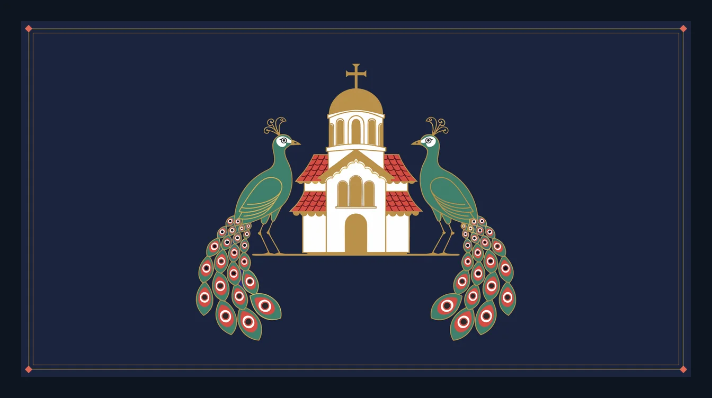

07 Case study In build
Gorgias
An app for my father to follow the Sunday Divine Liturgy at his church in Cyprus on his phone: the paragraph being chanted, large and in polytonic Greek, and his tap brings the next. A pure Dart engine computes the day’s service from the Church of Cyprus Τυπικόν and the Octoechos; a Python pipeline builds the text it reads from; every line can say where it came from. Free, donation-supported, never sold.

01 Problem
My father follows the Sunday Divine Liturgy at his church in Cyprus from memory and from the chanters. The service is in polytonic Greek, its variable parts change every Sunday with the tone of the week and the saint of the day, and the books that hold them are small, scattered across several volumes, and hard to read in a church that is still dark at 6:30 in the morning.
The brief I set myself was one sentence: he opens the app on a Sunday, the day's service is on screen, and he reaches the end without ever losing his place in a way he cannot recover from. One person, one church, one phone, and nothing on the screen competing with the words being chanted.
02 What I built
A Flutter app that shows the Liturgy one paragraph at a time, large and centred in Gentium Plus, advanced by his tap. Underneath it, a pure Dart engine computes the day's service, and a Python pipeline builds the text it reads from.
- Today's service, resolved on open. No date to pick and no menu: the engine works out the Sunday, the tone and the commemorations from the date.
- One paragraph in focus, with a faint peek of the one before and the one after. A tap brings the next; long prayers page; a long press opens the whole service as a list with his place marked.
- Where a text has not been acquired, the app says plainly what is being chanted and stays navigable, instead of showing nothing.
- Lapis and gold by night, parchment by day. The palette follows the light, because the service starts in the dark and ends in daylight.
- A call or a pocket does not lose his place: reopening returns him to the paragraph he was on.
03 Architecture
Two programs, not one. A build-time pipeline on my laptop turns three messy sources into one validated corpus: the Church of Cyprus Τυπικόν, which gives the month's directives; the AGES liturgical libraries, which give the Octoechos and the Menaion; and the fixed text of the Liturgy. The app ships with that corpus and never ingests anything. On the phone, a pure Dart resolver turns a date into an ordered service plan, a session holds the only mutable state, his place, and the presentation layer has one job: legible polytonic Greek.
04 Key decisions
- Compute the cycles, transcribe the directives. The Paschal and weekly cycles are arithmetic, so the engine computes them and the build audits the result against the published Τυπικόν with golden diffs. The choices only the Church makes, which hymn gives way to which on a given Sunday, are transcribed from its monthly Τυπικόν, one file per month, and built into the corpus. The Τυπικόν is one for the whole Church of Cyprus, so a second parish adds no monthly work.
- Provenance on every line. Three sources, three licences, three encodings. Every text in the corpus records where it came from, so it can be cited on screen and corrected when a chanter says it is wrong. The AGES text is used inside its grant for worship; the app is free and donation-supported, and will never be sold.
- The engine has no Flutter in it. Paschalion, resolver and corpus store are a plain Dart package, tested in milliseconds on a laptop against the Church's own published order, with no simulator in the loop.
- Steps measured, not assumed. "One paragraph a tap" was measured at the real type size and came to 229 taps for one Sunday, three times the earlier count. He chose two exchanges per screen in the litanies and one paragraph elsewhere, measured at 141, and that number is pinned by a test.
- The look was rejected, and redone in the real framework. The first screen was turned down on sight. Four rounds of concepts followed, each rendered by the app's own engine and judged side by side: one paragraph at a time; the tradition's beauty on the reading screen, with an arch and twisted columns drawn in code and peacocks, a lamp and two church miniatures as vector art the project owns; every text colour at WCAG AA; and motion only on his tap, with nothing moving while he reads.
05 Hard problems
- Text that was never Unicode. The fixed Liturgy exists as a PDF set in a pre-Unicode font that maps Greek onto Latin codepoints. The pipeline applies a deterministic character map before anything else sees the text, and one normalisation form is fixed once at the ingestion boundary, because polytonic Greek composed two different ways compares as unequal.
- Polytonic type on a phone. Gentium Plus was chosen because it was designed for polytonic Greek. Flutter has no balanced wrapping, so the typesetter binary-searches the narrowest width that keeps the line count. Material's default letter spacing made the typesetter measure one width and the screen draw another, and a paragraph measured to fit overflowed, until every property that changes a line's width was set explicitly.
- Named gaps. Some texts, a Cypriot saint's hymn most often, exist only in print. Rather than hide the slot, the app names what is being chanted and lets him tap past it. That turned an untranscribed hymn from a defect into the app telling him what the Church is doing.
- The work that is not code. The engineering came in under its estimates. What stalled the project, twice, was the rest: the call to the first chanter about the parish's rubric, the letters on rights, the first TestFlight upload. The plan now gives those the first dates.
06 Where it stands
The redesign is in build on its own branch, with the engine, pipeline and app suites green. The handover to my father is set for Sunday 15 November 2026, after a dry run at the service on the 8th. Nothing has reached a phone yet beyond the simulator: the first TestFlight build is the next step, and the app is not on the App Store.
Two parishes have just said yes to the idea. Their build comes after one man has followed one Liturgy with it, because every decision a parish would need, its patron saint's hymn, its rubric, the phones in its pews, waits on that evidence. Gorgias is free and donation-supported, and will never be sold: the text belongs to the Church.